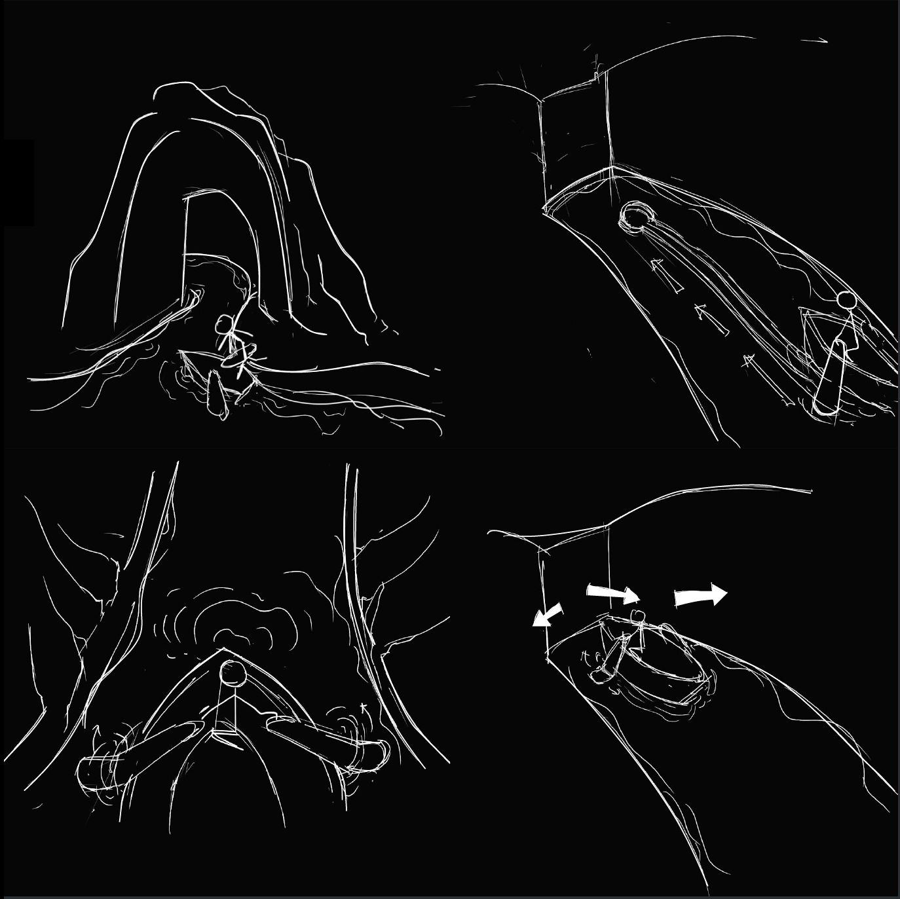

Fireflies’s Cave is a room-escape game designed with interactive technology. The room is set to be an ancient cave with a dry river bed beneath. The plot of the game is inspired by characters and stories from ancient Greek mythology. Focusing on user experience, I design the interactions that combine the real and virtual worlds, and devote to create an immersive experience.
In order to have in-person experiences, I went to 7 room-escape games with friends in Wuhan China.
I interviewed players before and after they played the games. I also asked the managers and game designers about concepts and operation condition.
I collected 124 questionnaires about the experience of the room-escape game: the preference of number of players, playing time, the theme and the platforms.
As a fan of room-escape game, I am very interested in doing deeper researches of the experience and exploring new game plays. To have a better understanding of others' experience, I started a survey about audience's preference. In the survey, more than 70% respondents are in the age range of 18 to 25, and more than 65% respondents has played room-escape games more than once this year.
52%think plot setting largely influences the game experience
67%room-escape games are designed for 4-6 players
32%prefer fictional theme (such as surrealistic plots)
8%players participated in the same room-escape game more than once
57%agree installation largely influences the game experience
Problem:
Solution:
Single Player
In multi-player games, each individual cannot participate in all levels. But some players prefer to have a quiet circumstance or solve the puzzles by themselves which is more fulfilling.
Design a roon-escape game especially for single player.
Immersive Experience
Most people are not willing to play the same room again and again, because it is less fun to solve problems that they have already known the answer.
Focus more on creating immersive experience other than setting puzzles.
Interactive Device
Mechanical devices are widely utilized in current room-escape games, but this kind of devices are lack real-time feedback. They can only be triggered with particular gestures.
Introduce digital medias to provide more flexibility of gestures and bridge the gap between the real and virtual worlds.
The key of the story is light. I have come up with more than 10 levels and each level has a game related to light including the physical properties of light and different types of light source (lightning, fire, stars, fireflies etc). I quickly sketched some storyboards from brainstorming.
I have analyzed the logic of the story and made it more reasonable. More details are added to this version in order to tell a complete story. I also think about the technologies, especially in tangible medias, and exam the technical feasibility in each level.
I find this story is kind of tedious after showing to some players. Paying too much attention on level setting, I neglect designing the plot. Start-development-climax-end is the classical paradigm in story creating. In my work however, there are too many highlights bringing equal stimulations, which may lead to confusion or fatigue. In order to create a better experience for player not only in the plot but also in the interactive design, I am rethinking about the storyboard.
The background will be showed in the form of a video before the player enter the room:
“Pandora was molded out of earth as part of the punishment of humanity for Prometheus’ theft of the secret of fire. Pandora opened a box, releasing all the evils of humanity and leaving only Hope inside which was called ‘Pandora’s Box’. You are picked out by Prometheus to save humanity by finding the last one in the Pandora’s Box. Triton, the son of Poseidon will tell you what to do.”
A cave with a dry river bed beneath, and a ship stops outside.
Firefly is the symbol of the fire. You can pick it up from the the glass bottle in the cave.
Triton (the mouth of truth) is sinking in sleep. Try to wake him up by throwing the fireflyies (shining plastic balls).
Triton wakes up from sleep and feels angry, so he sprays water to you. Try to avoid getting wet.
After telling the background stories about Pandora’s Box, Triton begins to spit out water.
The river is formed. You can take the glass bottle with a firefly in it.
The ship drifts to the side. You can go on board.
Row the oars and the ship will move forward.
Only when you pass through the “wild of greed”, “forest of envy”and ”swamp of agony”, can you collect 4 fireflies and reach the destination.
You can see a closed box at the end of the river. It is the Pandora’s Box.
Place the bottle in the groove and remove the lid. The fireflies will come out, and fly around the box.
Four fireflies will stay on the four corners of the box and open the box. “Hope” is in the box.
The mouth of truth is projected on the wall. You can throw the fireflies (plastic balls) to it. The fireflies are posited by infrared. When you hit his eye, the eye will light up. He will wake up if both of the eyes are lit.
After the river is formed, you can go on board. PS Move is applied to the oars. Because of the limitation of the space, there is only a very short distance that the ship moves forward physically. After that, the background moves while the ship is still there.
The image of bottle is projected on the wall with a hole in the middle. You can get the fireflies (plastic balls with LED inside) from the hole. After the river is formed, a real glass bottle will be presented at the same place as the projected one. There is a LED light as the firefly in the bottle.
Place the bottle in the groove and remove the lid. The fireflies will
come out and fly around the box which is realized by projection. Four
fireflies stay on the four corners and open the box.
There are still a lot of details needed to be polished for the narrative story in this project. I also would like to design the three mini games: “wild of greed”, “forest of envy”and ”swamp of agony” as part of this experience. For further development, I also would like to have some teammates to help me to figure out more technical questions, and put the concept into practice.